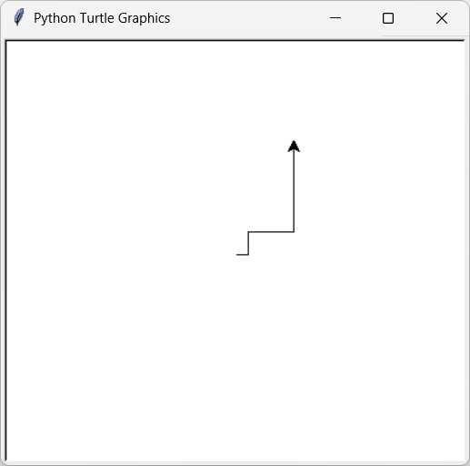

Introductions à la programmation
Introduction
Lors de vos années au collège, vous avez programmé en utilisant la programmation par blocs. Bien que ce type de langage ait des avantages pour comprendre les bases de la programmation, il reste limité.
C’est pour cela qu’au lycée, nous allons utiliser la programmation en Python. Ce langage n’est pas exclusif à la SNT, mais est également utilisé en mathématiques, en physique-chimie et en NSI.
Python, c‚Äôest bien üëç
Il est possible de réaliser l’ensemble des choses effectuées avec Scratch dans Python (comme dans l’exemple ci-dessous), et bien plus encore !
La programmation en 2 mots
rappel: La programmation, c’est dire à un ordinateur quoi faire en utilisant un langage qu’il peut comprendre. Un programme est donc une suite d’instructions que la machine exécute pas à pas.
üëâ Exemple tr√®s simple en Python :
print("Bonjour !")
Ici, l’ordinateur affichera le texte Bonjour ! à l’écran.
La programmation permet de :
- Automatiser des tâches (répéter rapidement ce qui serait long à faire à la main).
- Créer des dessins, des jeux, des applications, etc.
- Résoudre des problèmes en traduisant une idée en suite d’instructions.
⚡ Retenez :
- L’ordinateur ne réfléchit pas tout seul → il fait exactement ce qu’on lui dit.
- La programmation, c’est comme apprendre une nouvelle langue pour dialoguer avec lui.
commentaire
⚠️ Dans la suite de cette introduction, vous verrez dans les codes proposés le symbole # disséminé un peu partout.
Ce symbole indique un commentaire, c’est-à-dire une indication destinée au lecteur du programme.
Un commentaire sert uniquement à expliquer le code : il n’a aucune influence sur l’exécution du programme.
Turtle
Il est possible, dans Python, d’importer ce que l’on appelle des modules. Ces modules sont des programmes créés par d’autres utilisateurs, permettant d’avoir accès à de nouvelles possibilités.
Aujourd’hui, nous allons utiliser le module Turtle, qui va nous permettre de dessiner en utilisant Python.
Histoire de Turtle
Le module Turtle est inspiré d’un langage de programmation à but éducatif nommé Logo, créé en 1967.
Ce langage permettait de dessiner à l’aide d’une tortue sur une feuille numérique.
Tombé en désuétude aujourd’hui, Logo a néanmoins été repris bien des années plus tard dans Python afin de pouvoir, comme à l’époque, introduire la programmation aux débutants.
Mise en place
Afin de pouvoir utiliser Turtle et programmer, il nous faut une application permettant d’écrire notre programme. Durant cette année, nous allons utiliser l’application Thonny, présente sur votre bureau.
thonny
Thonny est un logiciel pour programmer en Python, très utilisé en SNT car il est simple :
-
on écrit le code dans l’éditeur,
-
on lance avec ▶ et le résultat apparaît dans la console,
-
On peut suivre pas à pas l’exécution et voir les variables changer à l’aide du débogueur (nous verrons plus tard cet outil).
-
On peut sauvegarder et charger des codes faits précédemment.
Commençons tout d’abord par importer notre module turtle avec la commande :
from turtle import *
Cette commande signifie que l’on veut importer tout (symbolisé par *) depuis le module turtle.
Nous allons ensuite afficher la feuille sur laquelle nous ferons se déplacer notre tortue avec le code suivant :
from turtle import *
reset()
Nous sommes maintenant prêts à dessiner pour la suite de cette activité.
Possibilités
Avancer :
forward(100)
# avec 100 correspondant à la longueur du trait
Tourner à gauche :
left(90)
# avec 90 correspondant à l’angle que va prendre la tortue
Tourner à droite :
right(90)
# avec 90 correspondant à l’angle que va prendre la tortue
Changer la couleur :
color("blue")
# avec "blue" correspondant à la couleur (en anglais) utilisée par la tortue pour dessiner la suite
Première activité
Réalisez l’image suivante, où l’ensemble des traits est de longueur 100.

Variables
Afin d’éviter de répéter plusieurs fois le même nombre dans notre code, on utilise ce que l’on appelle des variables. Ces variables permettent de stocker une donnée (une information).
Exemple :
x = 100
Ces variables ont également la possibilité d’être modifiées.
Exemple :
x = 100
x = x - 1
Enfin, il est possible d’utiliser les variables dans les fonctions (nous reviendrons sur ce terme plus tard) vues précédemment.
Exemple :
x = 100
forward(x)
Seconde activité
Réalisez l’image suivante, où le premier trait est égal à 10 et double à chaque nouveau trait.

Indice : la multiplication entre deux nombres s’effectue avec l’opérateur *
Boucles
Supposons que l’on veuille effectuer plusieurs fois la même action : il est possible d’utiliser une boucle. Celle-ci nous permet de ne pas écrire plusieurs fois la même chose.
Par exemple, le code suivant :
reset()
x = 100
forward(x)
left(90)
forward(x)
right(90)
forward(x)
left(90)
forward(x)
right(90)
forward(x)
left(90)
forward(x)
right(90)
peut être remplacé par :
reset()
x = 100
for i in range(3):
forward(x)
left(90)
forward(x)
right(90)
Troisième activité
Réalisez l’image suivante en utilisant une boucle for.

Regardons maintenant de plus près la ligne de commande suivante :
for i in range(3):
-
range(n)crée un ensemble d’éléments partant de 0 jusqu’àn-1. → Dans l’exemple précédent,range(3)crée les éléments 0, 1, 2. -
La boucle se lance, et la variable
i(appelée indice) va prendre successivement les valeurs créées parrange(n).
Dans l’exemple précédent, cela donne :
| Position dans le code | Valeur de i |
|---|---|
| Avant d’entrer dans la boucle | |
| 1 ≥·µâ it√©ration (tour) | 0 |
| 2ᵉ itération (tour) | 1 |
| 3ᵉ itération (tour) | 2 |
| Une fois sorti de la boucle |
Il est possible d’utiliser i comme une variable au sein de la boucle, comme dans l’exemple suivant :
resultat = 0
for i in range(10):
resultat = resultat + i
Ici, resultat va être égal à la somme des éléments de 0 à 9 (10 étant exclu), soit :
$0 + 1 + 2 + 3 + \dots + 8 + 9 = 45$
Quatrième activité
Réalisez l’image suivante en utilisant une boucle for et en exploitant la variable i.

Conditions
En Python, il est également possible de faire des choix entre plusieurs possibilités. Cela s’appelle les conditions. La syntaxe est la suivante :
if condition_1:
# faire cette partie
elif condition_2:
# faire cette partie
else:
# faire cette partie
Trois termes sont utilisés ici :
-
if : signifie si en français. → Si la condition qui suit est vraie, alors la partie en dessous est exécutée.
-
elif : signifie sinon si en français. → Si la condition précédente est fausse et que la condition qui suit est vraie, alors la partie en dessous est exécutée.
-
else : signifie sinon en français. → Si toutes les conditions précédentes sont fausses, alors la partie en dessous est exécutée.
Exemple :
x = 100
if x < 20:
print("x est inférieur à 20")
elif x > 20:
print("x est supérieur à 20")
else:
print("x est égal à 20")
Essayez ce programme en modifiant la valeur de x pour comprendre comment fonctionnent les conditions.
Cinquième activité
Reprenez votre code précédent en faisant en sorte que la couleur de votre pinceau soit rouge lorsque i < 50, et bleue sinon.

Fonctions
Pour conclure cette partie, Python permet la création et l’utilisation de fonctions, qui sont des blocs de code réutilisables plusieurs fois par la suite.
Si, par exemple, je voulais écrire quelque chose comme :
forward(10)
left(90)
forward(10)
right(90)
color('blue')
forward(10)
left(90)
forward(10)
right(90)
color('red')
forward(10)
left(90)
forward(10)
right(90)
On pourrait créer une fonction de la forme suivante :
def fonction_1():
forward(10)
left(90)
forward(10)
right(90)
Cette fonction porte le nom de fonction_1, et nous pouvons ensuite l’utiliser dans notre code :
def fonction_1():
forward(10)
left(90)
forward(10)
right(90)
fonction_1()
color('blue')
fonction_1()
color('red')
fonction_1()
Sixième activité
Créez une fonction carre qui dessine un carré dont les côtés sont de longueur 100, puis utilisez-la afin de refaire l’image suivante :
Il est également possible d’utiliser une autre fonctionnalité des fonctions : les paramètres.
Reprenons la fonction faite précédemment :
def fonction_1():
forward(10)
left(90)
forward(10)
right(90)
On veut maintenant préciser la longueur des traits lorsque l’on utilise la fonction.
Pour cela, on va créer un paramètre longueur dans notre fonction :
def fonction_1(longueur):
forward(longueur)
left(90)
forward(longueur)
right(90)
Nous pouvons maintenant l’utiliser en appelant la fonction avec une valeur :
def fonction_1(longueur):
forward(longueur)
left(90)
forward(longueur)
right(90)
fonction_1(50)
color('blue')
fonction_1(100)
color('red')
fonction_1(200)
Enfin, il est possible d’utiliser plusieurs paramètres en même temps :
def fonction_3(longueur, angle):
forward(longueur)
left(angle)
forward(longueur)
right(angle)
fonction_3(100, 90)
Septième activité
Reprenez votre fonction carre créée précédemment en y ajoutant un paramètre pour la longueur des côtés.
Écrivez ensuite un code permettant de refaire l’image suivante :

pour allée plus loin
activité complementaire
reproduisez les dessins suivants: